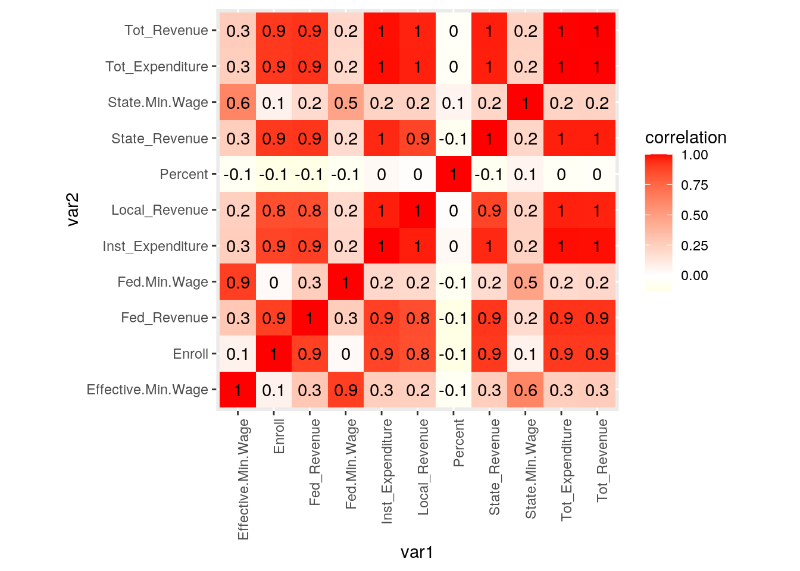
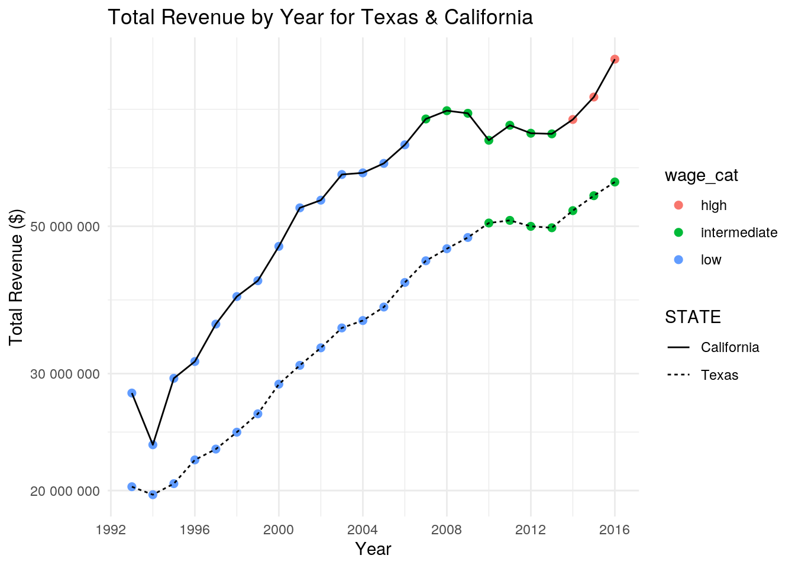
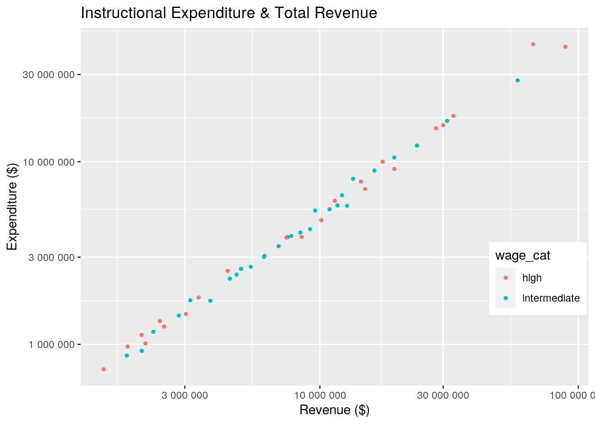
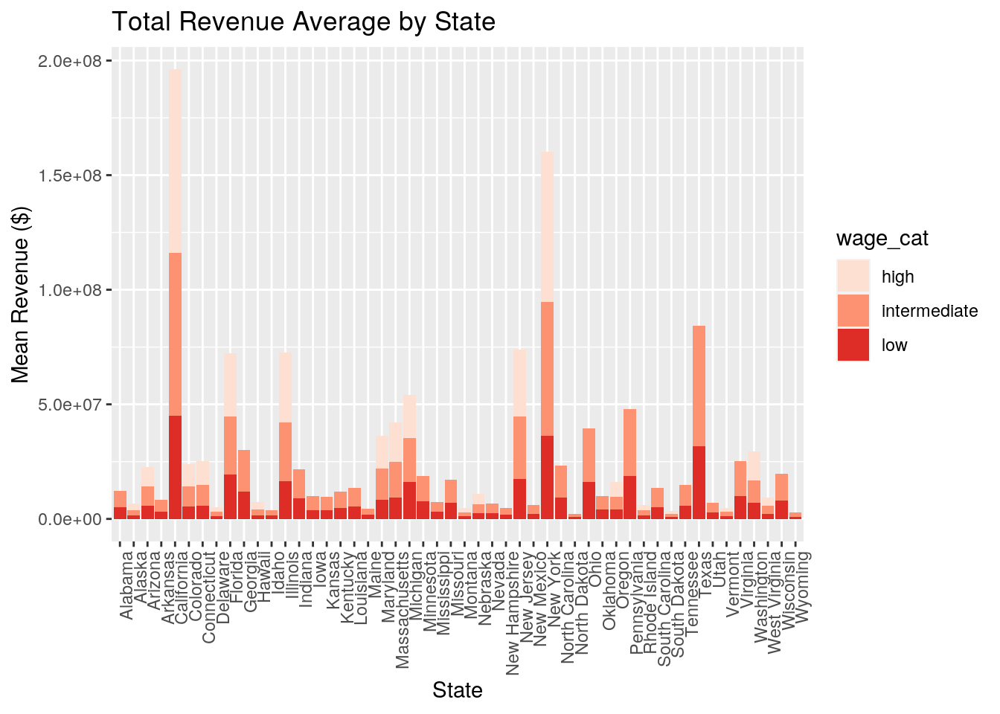
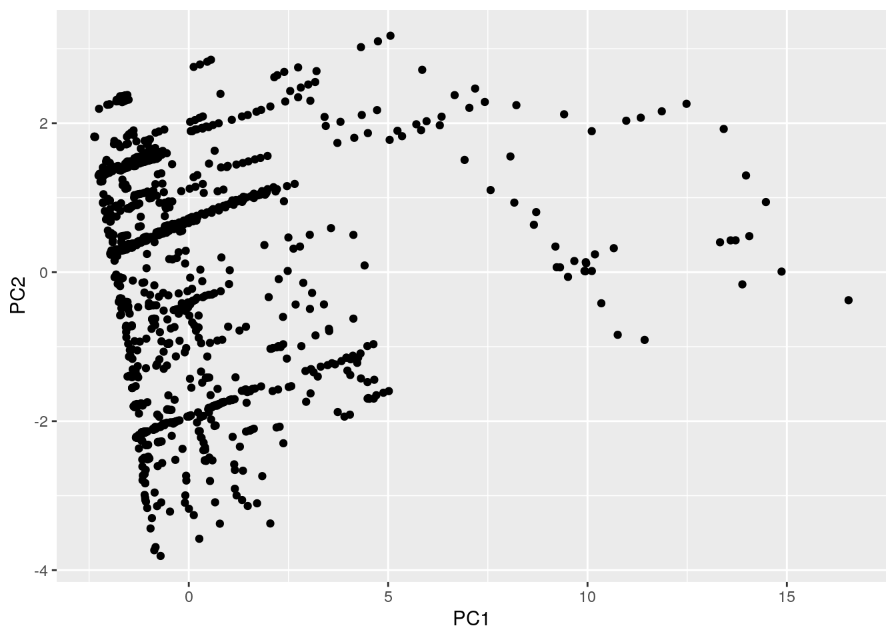

The datasets ‘education’ and ‘wages’ were chosen for exploratory data analysis. The ‘education’ dataset contains a wide range of aspects for U.S. education (K-12) and finance mainly for the years 1992-2016, with our focus on revenue and expenditure. The ‘wages’ dataset contains minimum wages set by the states and the federal government for the years 1968-2020. After many hours of searching for data in the R datasets, I decided to turn to other sources. These datasets were acquired through Kaggle briefly after filtering for datasets on the United States. I find them interesting because lately I’ve been hearing many petitions on raising the federal minimum wage to $15/hour, so I thought it’d be a worthwhile experience to explore minimum wage trends over the years. I also thought it’d be interesting to explore each state’s total revenue and expenditure to gain insight on how much is being spent for instructional purposes. The main association I expect to see over the years is an increase in revenue, expenditure, expenditure for instructional purposes, and minimum wage.
library(tidyverse)
education <- read_csv("education.csv")
glimpse(education)## Rows: 1,715
## Columns: 25
## $ PRIMARY_KEY <chr> "1992_ALABAMA", "1992_ALASKA", "1992_ARI…
## $ STATE <chr> "ALABAMA", "ALASKA", "ARIZONA", "ARKANSA…
## $ YEAR <dbl> 1992, 1992, 1992, 1992, 1992, 1992, 1992…
## $ ENROLL <dbl> NA, NA, NA, NA, NA, NA, NA, NA, NA, NA, …
## $ TOTAL_REVENUE <dbl> 2678885, 1049591, 3258079, 1711959, 2626…
## $ FEDERAL_REVENUE <dbl> 304177, 106780, 297888, 178571, 2072470,…
## $ STATE_REVENUE <dbl> 1659028, 720711, 1369815, 958785, 165465…
## $ LOCAL_REVENUE <dbl> 715680, 222100, 1590376, 574603, 7641041…
## $ TOTAL_EXPENDITURE <dbl> 2653798, 972488, 3401580, 1743022, 27138…
## $ INSTRUCTION_EXPENDITURE <dbl> 1481703, 498362, 1435908, 964323, 143589…
## $ SUPPORT_SERVICES_EXPENDITURE <dbl> 735036, 350902, 1007732, 483488, 8520926…
## $ OTHER_EXPENDITURE <dbl> NA, NA, NA, NA, NA, NA, NA, NA, NA, NA, …
## $ CAPITAL_OUTLAY_EXPENDITURE <dbl> 174053, 37451, 609114, 145212, 2044688, …
## $ GRADES_PK_G <dbl> 8224, 2371, 2544, 808, 59067, 7410, 5731…
## $ GRADES_KG_G <dbl> 55460, 10152, 53497, 33511, 431763, 4758…
## $ GRADES_4_G <dbl> 57948, 9748, 55433, 34632, 418418, 50648…
## $ GRADES_8_G <dbl> 58025, 8789, 49081, 36011, 363296, 45025…
## $ GRADES_12_G <dbl> 41167, 6714, 37410, 27651, 270675, 34533…
## $ GRADES_1_8_G <dbl> NA, NA, NA, NA, NA, NA, NA, NA, NA, NA, …
## $ GRADES_9_12_G <dbl> NA, NA, NA, NA, NA, NA, NA, NA, NA, NA, …
## $ GRADES_ALL_G <dbl> 731634, 122487, 673477, 441490, 5254844,…
## $ AVG_MATH_4_SCORE <dbl> 208, NA, 215, 210, 208, 221, 227, 218, 1…
## $ AVG_MATH_8_SCORE <dbl> 252, NA, 265, 256, 261, 272, 274, 263, 2…
## $ AVG_READING_4_SCORE <dbl> 207, NA, 209, 211, 202, 217, 222, 213, 1…
## $ AVG_READING_8_SCORE <dbl> NA, NA, NA, NA, NA, NA, NA, NA, NA, NA, …wages <- read.csv("wages.csv")
glimpse(wages)## Rows: 2,862
## Columns: 15
## $ Year <int> 1968, 1968, 1968,…
## $ State <fct> Alabama, Alaska, …
## $ State.Minimum.Wage <dbl> 0.00000, 2.10000,…
## $ State.Minimum.Wage.2020.Dollars <dbl> 0.00, 15.61, 3.48…
## $ Federal.Minimum.Wage <dbl> 1.15, 1.15, 1.15,…
## $ Federal.Minimum.Wage.2020.Dollars <dbl> 8.55, 8.55, 8.55,…
## $ Effective.Minimum.Wage <dbl> 1.15, 2.10, 1.15,…
## $ Effective.Minimum.Wage.2020.Dollars <dbl> 8.55, 15.61, 8.55…
## $ CPI.Average <dbl> 34.8, 34.8, 34.8,…
## $ Department.Of.Labor.Uncleaned.Data <fct> ..., 2.1, 18.72 -…
## $ Department.Of.Labor.Cleaned.Low.Value <dbl> 0.00000, 2.10000,…
## $ Department.Of.Labor.Cleaned.Low.Value.2020.Dollars <dbl> 0.00, 15.61, 3.48…
## $ Department.Of.Labor.Cleaned.High.Value <dbl> 0.00000, 2.10000,…
## $ Department.Of.Labor.Cleaned.High.Value.2020.Dollars <dbl> 0.00, 15.61, 4.91…
## $ Footnote <fct> , , (b), (b), (b)…–
Before I get into the type of join I performed, I’d like to share the process of how I prepared my ‘education’ dataset for an efficient join. The ‘wages’ dataset didn’t need any changes. Both original datasets were already tidy, but the ‘education’ dataset was very tedious because all of the names under ‘STATE’ consisted of only uppercase letters with underscores (_) as spaces. I first removed all the underscores and then I changed the uppercase formatting to title formatting.
Thereafter the type of join that I performed on my datasets, ‘education’ and ‘wages’, was an inner_join in order to only keep rows that had a match on the ID variables I joined by, which in this join were STATE and YEAR. In the dataset ‘education’ there were 1,715 observations and in the dataset ‘wages’ there were 2,862 observations. After the join there were only 1,650 observations total. The observations that were dropped in the ‘education’ dataset were those with ‘District Of Columbia’, ‘National’, and ‘Dodea’ in the ‘STATE’ column. The observations that were dropped in the ‘wages’ dataset were mostly those with ‘1968’-‘1991’ & ‘2017’-‘2020’ in the ‘Year’ column. Other observations dropped from the ‘wages’ dataset consisted of those with ‘District of Columbia’, ‘Guam’, ‘Puerto Rico’, and ‘U.S. Virgin Islands’ in the ‘State’ column.
After performing the inner_join, I dropped further observations by omitting all rows with NA values in the columns I was interested in. The total number of observations were reduced from 1,650 to 1,200. By chance, this actually enhanced the joined data, because now we have complete data for only the 50 states from the year of 1993 to 2016.
Since our main focus throughout this data will be the 50 states of the U.S., there aren’t many potential problems with the observations dropped. The only downside is that we won’t be able to observe any relationships in the years 2017-2020 due to missing data for these years in the ‘education’ dataset.
education <- education %>% mutate(STATE = str_replace(STATE,
"_", " ")) %>% mutate(STATE = str_replace(STATE, "_", " ")) %>%
mutate(STATE = str_to_title(STATE))
joined_data <- inner_join(education, wages, by = c(STATE = "State",
YEAR = "Year"))
glimpse(joined_data)## Rows: 1,650
## Columns: 38
## $ PRIMARY_KEY <chr> "1992_ALABAMA", "…
## $ STATE <chr> "Alabama", "Alask…
## $ YEAR <dbl> 1992, 1992, 1992,…
## $ ENROLL <dbl> NA, NA, NA, NA, N…
## $ TOTAL_REVENUE <dbl> 2678885, 1049591,…
## $ FEDERAL_REVENUE <dbl> 304177, 106780, 2…
## $ STATE_REVENUE <dbl> 1659028, 720711, …
## $ LOCAL_REVENUE <dbl> 715680, 222100, 1…
## $ TOTAL_EXPENDITURE <dbl> 2653798, 972488, …
## $ INSTRUCTION_EXPENDITURE <dbl> 1481703, 498362, …
## $ SUPPORT_SERVICES_EXPENDITURE <dbl> 735036, 350902, 1…
## $ OTHER_EXPENDITURE <dbl> NA, NA, NA, NA, N…
## $ CAPITAL_OUTLAY_EXPENDITURE <dbl> 174053, 37451, 60…
## $ GRADES_PK_G <dbl> 8224, 2371, 2544,…
## $ GRADES_KG_G <dbl> 55460, 10152, 534…
## $ GRADES_4_G <dbl> 57948, 9748, 5543…
## $ GRADES_8_G <dbl> 58025, 8789, 4908…
## $ GRADES_12_G <dbl> 41167, 6714, 3741…
## $ GRADES_1_8_G <dbl> NA, NA, NA, NA, N…
## $ GRADES_9_12_G <dbl> NA, NA, NA, NA, N…
## $ GRADES_ALL_G <dbl> 731634, 122487, 6…
## $ AVG_MATH_4_SCORE <dbl> 208, NA, 215, 210…
## $ AVG_MATH_8_SCORE <dbl> 252, NA, 265, 256…
## $ AVG_READING_4_SCORE <dbl> 207, NA, 209, 211…
## $ AVG_READING_8_SCORE <dbl> NA, NA, NA, NA, N…
## $ State.Minimum.Wage <dbl> 0.00, 4.75, 0.00,…
## $ State.Minimum.Wage.2020.Dollars <dbl> 0.00, 8.76, 0.00,…
## $ Federal.Minimum.Wage <dbl> 4.25, 4.25, 4.25,…
## $ Federal.Minimum.Wage.2020.Dollars <dbl> 7.84, 7.84, 7.84,…
## $ Effective.Minimum.Wage <dbl> 4.25, 4.75, 4.25,…
## $ Effective.Minimum.Wage.2020.Dollars <dbl> 7.84, 8.76, 7.84,…
## $ CPI.Average <dbl> 140.3, 140.3, 140…
## $ Department.Of.Labor.Uncleaned.Data <fct> ..., 4.75, ..., 3…
## $ Department.Of.Labor.Cleaned.Low.Value <dbl> 0.00, 4.75, 0.00,…
## $ Department.Of.Labor.Cleaned.Low.Value.2020.Dollars <dbl> 0.00, 8.76, 0.00,…
## $ Department.Of.Labor.Cleaned.High.Value <dbl> 0.00, 4.75, 0.00,…
## $ Department.Of.Labor.Cleaned.High.Value.2020.Dollars <dbl> 0.00, 8.76, 0.00,…
## $ Footnote <fct> , , , , , , , , ,…missingrows_education <- anti_join(education, wages, by = c(STATE = "State",
YEAR = "Year"))
glimpse(missingrows_education)## Rows: 65
## Columns: 25
## $ PRIMARY_KEY <chr> "1992_DISTRICT_OF_COLUMBIA", "1993_DISTR…
## $ STATE <chr> "District Of Columbia", "District Of Col…
## $ YEAR <dbl> 1992, 1993, 1994, 1995, 1996, 1997, 1998…
## $ ENROLL <dbl> NA, 80937, 80678, 80450, 79802, 78648, 7…
## $ TOTAL_REVENUE <dbl> 709480, 721151, 735720, 700111, 678874, …
## $ FEDERAL_REVENUE <dbl> 64749, 73882, 79432, 65527, 57870, 73177…
## $ STATE_REVENUE <dbl> 0, 0, 0, 0, 0, 0, 0, 0, 0, 0, 0, 0, 0, 0…
## $ LOCAL_REVENUE <dbl> 644731, 647269, 656288, 634584, 621004, …
## $ TOTAL_EXPENDITURE <dbl> 742893, 719440, 769818, 708224, 703245, …
## $ INSTRUCTION_EXPENDITURE <dbl> 329160, 339266, 351028, 336543, 334893, …
## $ SUPPORT_SERVICES_EXPENDITURE <dbl> 316679, 302281, 332951, 301371, 312944, …
## $ OTHER_EXPENDITURE <dbl> NA, 39819, 63271, 38207, 39956, 23494, 3…
## $ CAPITAL_OUTLAY_EXPENDITURE <dbl> 47272, 38074, 22568, 32103, 15452, 53106…
## $ GRADES_PK_G <dbl> 4818, 5216, 5508, 5387, 5044, 5156, 4831…
## $ GRADES_KG_G <dbl> 6667, 6986, 7628, 7736, 7469, 6982, 6446…
## $ GRADES_4_G <dbl> 5832, 5870, 5783, 5852, 5442, 5357, 5607…
## $ GRADES_8_G <dbl> 5000, 4935, 5031, 4749, 4625, 4376, 4083…
## $ GRADES_12_G <dbl> 3433, 3303, 3203, 2972, 3042, 2961, 2572…
## $ GRADES_1_8_G <dbl> NA, NA, NA, NA, NA, 45470, 42997, 45931,…
## $ GRADES_9_12_G <dbl> NA, NA, NA, NA, NA, 15896, 13932, 15849,…
## $ GRADES_ALL_G <dbl> 80937, 80678, 80450, 79802, 78648, 77111…
## $ AVG_MATH_4_SCORE <dbl> 193, NA, NA, NA, NA, NA, NA, NA, 192, NA…
## $ AVG_MATH_8_SCORE <dbl> 235, NA, NA, NA, NA, NA, NA, NA, 235, NA…
## $ AVG_READING_4_SCORE <dbl> 188, NA, 179, NA, NA, NA, 179, NA, NA, N…
## $ AVG_READING_8_SCORE <dbl> NA, NA, NA, NA, NA, NA, 236, NA, NA, NA,…missingrows_wages <- anti_join(wages, education, by = c(State = "STATE",
Year = "YEAR"))
glimpse(missingrows_wages)## Rows: 1,212
## Columns: 15
## $ Year <int> 1968, 1968, 1968,…
## $ State <fct> Alabama, Alaska, …
## $ State.Minimum.Wage <dbl> 0.00000, 2.10000,…
## $ State.Minimum.Wage.2020.Dollars <dbl> 0.00, 15.61, 3.48…
## $ Federal.Minimum.Wage <dbl> 1.15, 1.15, 1.15,…
## $ Federal.Minimum.Wage.2020.Dollars <dbl> 8.55, 8.55, 8.55,…
## $ Effective.Minimum.Wage <dbl> 1.15, 2.10, 1.15,…
## $ Effective.Minimum.Wage.2020.Dollars <dbl> 8.55, 15.61, 8.55…
## $ CPI.Average <dbl> 34.8, 34.8, 34.8,…
## $ Department.Of.Labor.Uncleaned.Data <fct> ..., 2.1, 18.72 -…
## $ Department.Of.Labor.Cleaned.Low.Value <dbl> 0.00000, 2.10000,…
## $ Department.Of.Labor.Cleaned.Low.Value.2020.Dollars <dbl> 0.00, 15.61, 3.48…
## $ Department.Of.Labor.Cleaned.High.Value <dbl> 0.00000, 2.10000,…
## $ Department.Of.Labor.Cleaned.High.Value.2020.Dollars <dbl> 0.00, 15.61, 4.91…
## $ Footnote <fct> , , (b), (b), (b)…joined_data <- joined_data %>% select(2:10, 26, 28, 30) %>% na.omit()
glimpse(joined_data)## Rows: 1,200
## Columns: 12
## $ STATE <chr> "Alabama", "Alaska", "Arizona", "Arkansas", "…
## $ YEAR <dbl> 1993, 1993, 1993, 1993, 1993, 1993, 1993, 199…
## $ ENROLL <dbl> 727716, 121156, 676297, 311432, 5129788, 5395…
## $ TOTAL_REVENUE <dbl> 2827391, 1191398, 3427976, 1346909, 28043338,…
## $ FEDERAL_REVENUE <dbl> 331409, 176150, 318465, 128196, 2151157, 1477…
## $ STATE_REVENUE <dbl> 1729295, 775829, 1415407, 771079, 17064146, 1…
## $ LOCAL_REVENUE <dbl> 766687, 239419, 1694104, 447634, 8828035, 166…
## $ TOTAL_EXPENDITURE <dbl> 2833433, 1126398, 3623946, 1376067, 28110986,…
## $ INSTRUCTION_EXPENDITURE <dbl> 1564558, 494917, 1578889, 782791, 15281147, 1…
## $ State.Minimum.Wage <dbl> 0.00, 4.75, 0.00, 3.65, 4.25, 3.00, 4.27, 4.2…
## $ Federal.Minimum.Wage <dbl> 4.25, 4.25, 4.25, 4.25, 4.25, 4.25, 4.25, 4.2…
## $ Effective.Minimum.Wage <dbl> 4.25, 4.75, 4.25, 4.25, 4.25, 4.25, 4.27, 4.2…–
After generating summary statistics with various functions on the joined dataset, I came across some interesting results! Before any summary statistics, I created a new variable, ‘percent’, to obtain the percentage of total expenditure being spent for instructional purposes. Next I obtained mean, standard deviation, and max values for all numeric variables in the joined dataset. I won’t go into specific details for these values but I’ve provided the results below. To improve our dataset, I created another new variable, ‘wage_cat’, to categorize minimum wage values. I decided to create 3 possible categories which are ‘low’, ‘intermediate’, and ‘high’. Any minimum wage value below 7.25 is categorized as ‘low’, any value greater or equal to 7.25 and less than or equal to 8.0 is categorized as ‘intermediate’, and any value above 8.0 will be categorized as ‘high’. I decided to go with these cutoffs since the current minimum wage is 7.25. After grouping by wage category, I obtained the minimum and average values for all numeric variables. Over the span of 1993-2016, the average total revenue across states in the ‘intermediate’ wage category was $11,799,719 and the average instructional expenditure was $6,151,529. For the ‘high’ wage category, the average total revenue across states was $16,002,289 and average instructional expenditure was $8,434,674. This makes sense and we can infer that the average values for the ‘low’ wage category will be lower than both.
Further exploration consisted of grouping by state for the years 2010-2016, to obtain average values for all numeric variables based on more recent years. The state that averaged the highest percentage of their total expenditure towards instructional expenditure was New York with 63.6%. Regarding Texas, we do poorly in these terms with a rank of 48 out of 50 states with only 47.4% of our total expenditure going to instructional purposes. The state that averaged the highest total revenue was California with $73,721,341. Texas came in 3rd with an average of $52,562,855. It’s interesting that although we have a high average for total revenue, we are ranked 48th when it comes to how much of our expenditure goes to education. These results sparked my curiosity in California and Texas since it’s widely known that many Californians have been migrating to Texas, so I generated a table with only values for these two states. Lastly, I grouped by both wage category and state to obtain a count of years in each category for each state. After reshaping, it’s now clear how many years every state has been in each category.
joined_data <- joined_data %>% mutate(percent = (INSTRUCTION_EXPENDITURE/TOTAL_EXPENDITURE) *
100)
joined_data %>% summarize_at(3:13, mean)## # A tibble: 1 x 11
## ENROLL TOTAL_REVENUE FEDERAL_REVENUE STATE_REVENUE LOCAL_REVENUE
## <dbl> <dbl> <dbl> <dbl> <dbl>
## 1 9.35e5 9455905. 800741. 4398973. 4256190.
## # … with 6 more variables: TOTAL_EXPENDITURE <dbl>,
## # INSTRUCTION_EXPENDITURE <dbl>, State.Minimum.Wage <dbl>,
## # Federal.Minimum.Wage <dbl>, Effective.Minimum.Wage <dbl>, percent <dbl>joined_data %>% summarize_at(3:13, sd)## # A tibble: 1 x 11
## ENROLL TOTAL_REVENUE FEDERAL_REVENUE STATE_REVENUE LOCAL_REVENUE
## <dbl> <dbl> <dbl> <dbl> <dbl>
## 1 1.07e6 11977996. 1172023. 5642795. 5600504.
## # … with 6 more variables: TOTAL_EXPENDITURE <dbl>,
## # INSTRUCTION_EXPENDITURE <dbl>, State.Minimum.Wage <dbl>,
## # Federal.Minimum.Wage <dbl>, Effective.Minimum.Wage <dbl>, percent <dbl>joined_data %>% summarize_at(3:13, max)## # A tibble: 1 x 11
## ENROLL TOTAL_REVENUE FEDERAL_REVENUE STATE_REVENUE LOCAL_REVENUE
## <dbl> <dbl> <dbl> <dbl> <dbl>
## 1 6.31e6 89217262 9990221 50904567 36105265
## # … with 6 more variables: TOTAL_EXPENDITURE <dbl>,
## # INSTRUCTION_EXPENDITURE <dbl>, State.Minimum.Wage <dbl>,
## # Federal.Minimum.Wage <dbl>, Effective.Minimum.Wage <dbl>, percent <dbl>joined_data <- joined_data %>% mutate(wage_cat = case_when(Effective.Minimum.Wage >
8 ~ "high", Effective.Minimum.Wage <= 8 & 7.25 <= Effective.Minimum.Wage ~
"intermediate", Effective.Minimum.Wage < 7.25 ~ "low"))
joined_data %>% group_by(wage_cat) %>% summarize_at(3:13, min)## # A tibble: 3 x 12
## wage_cat ENROLL TOTAL_REVENUE FEDERAL_REVENUE STATE_REVENUE LOCAL_REVENUE
## <chr> <dbl> <dbl> <dbl> <dbl> <dbl>
## 1 high 85184 1415149 102434 425614 59027
## 2 interme… 87379 1292742 94504 374648 47848
## 3 low 84146 465650 33672 83613 23917
## # … with 6 more variables: TOTAL_EXPENDITURE <dbl>,
## # INSTRUCTION_EXPENDITURE <dbl>, State.Minimum.Wage <dbl>,
## # Federal.Minimum.Wage <dbl>, Effective.Minimum.Wage <dbl>, percent <dbl>joined_data %>% group_by(wage_cat) %>% summarize_at(3:13, mean)## # A tibble: 3 x 12
## wage_cat ENROLL TOTAL_REVENUE FEDERAL_REVENUE STATE_REVENUE LOCAL_REVENUE
## <chr> <dbl> <dbl> <dbl> <dbl> <dbl>
## 1 high 1.09e6 16002289. 1258064. 7341120. 7403105.
## 2 interme… 9.53e5 11799719. 1191856. 5385703. 5222160.
## 3 low 9.13e5 7934336. 604284. 3741563. 3588489.
## # … with 6 more variables: TOTAL_EXPENDITURE <dbl>,
## # INSTRUCTION_EXPENDITURE <dbl>, State.Minimum.Wage <dbl>,
## # Federal.Minimum.Wage <dbl>, Effective.Minimum.Wage <dbl>, percent <dbl>joined_data %>% group_by(STATE) %>% filter(YEAR >= "2010") %>%
summarize_at(2:12, mean) %>% arrange(desc(percent))## # A tibble: 50 x 12
## STATE ENROLL TOTAL_REVENUE FEDERAL_REVENUE STATE_REVENUE LOCAL_REVENUE
## <chr> <dbl> <dbl> <dbl> <dbl> <dbl>
## 1 New … 2.64e6 60539151. 3643551. 24487962. 32407639.
## 2 Nebr… 3.05e5 3983824. 397049. 1255990. 2330785
## 3 Mass… 9.22e5 16181968 917502. 6331675. 8932791.
## 4 Rhod… 1.37e5 2284576. 203722. 834797. 1246058.
## 5 Conn… 5.17e5 10451970. 556014. 3848023. 6047933.
## 6 New … 1.87e5 3011378 173877. 1025748. 1811754.
## 7 Tenn… 9.91e5 9050744. 1157777 4143191. 3749776.
## 8 Idaho 2.72e5 2112061. 278011 1317779. 516271.
## 9 Nort… 1.46e6 13800940. 1723256. 7827015 4250668.
## 10 Hawa… 1.83e5 2623164. 309540. 2250408 63216.
## # … with 40 more rows, and 6 more variables: TOTAL_EXPENDITURE <dbl>,
## # INSTRUCTION_EXPENDITURE <dbl>, State.Minimum.Wage <dbl>,
## # Federal.Minimum.Wage <dbl>, Effective.Minimum.Wage <dbl>, percent <dbl>joined_data %>% group_by(STATE) %>% filter(YEAR >= "2010") %>%
summarize_at(2:12, mean) %>% arrange(desc(TOTAL_REVENUE))## # A tibble: 50 x 12
## STATE ENROLL TOTAL_REVENUE FEDERAL_REVENUE STATE_REVENUE LOCAL_REVENUE
## <chr> <dbl> <dbl> <dbl> <dbl> <dbl>
## 1 Cali… 6.21e6 73721341. 8430899. 39308099. 25982343.
## 2 New … 2.64e6 60539151. 3643551. 24487962. 32407639.
## 3 Texas 4.90e6 52562855. 6438061. 20097191. 26027602.
## 4 Illi… 2.06e6 30544360. 2620318. 10618173. 17305869
## 5 Penn… 1.63e6 28979322. 2302575. 10000590. 16676158.
## 6 New … 1.35e6 28052238. 1381613. 10561591. 16109034.
## 7 Flor… 2.69e6 26097171. 3483316. 9647129. 12966726.
## 8 Ohio 1.62e6 23359283. 1946263. 9584112. 11828909.
## 9 Mich… 1.40e6 18937063. 1873000. 10075855. 6988208.
## 10 Geor… 1.69e6 18099862. 1996661. 7741032. 8362168.
## # … with 40 more rows, and 6 more variables: TOTAL_EXPENDITURE <dbl>,
## # INSTRUCTION_EXPENDITURE <dbl>, State.Minimum.Wage <dbl>,
## # Federal.Minimum.Wage <dbl>, Effective.Minimum.Wage <dbl>, percent <dbl>joined_data %>% filter(STATE == "Texas" | STATE == "California") %>%
select(STATE, YEAR, TOTAL_REVENUE, TOTAL_EXPENDITURE, Effective.Minimum.Wage,
percent)## # A tibble: 48 x 6
## STATE YEAR TOTAL_REVENUE TOTAL_EXPENDITU… Effective.Minimum.Wa… percent
## <chr> <dbl> <dbl> <dbl> <dbl> <dbl>
## 1 California 1993 28043338 28110986 4.25 54.4
## 2 Texas 1993 20267205 18574871 4.25 48.0
## 3 California 1994 23440845 23012688 4.25 54.1
## 4 Texas 1994 19713604 19224149 4.25 51.1
## 5 California 1995 29512214 30097549 4.25 53.6
## 6 Texas 1995 20483376 20198924 4.25 52.7
## 7 California 1996 31282981 31561692 4.25 53.5
## 8 Texas 1996 22241369 22401797 4.25 51.0
## 9 California 1997 35614934 33862281 4.75 53.6
## 10 Texas 1997 23091567 23671010 4.75 50.9
## # … with 38 more rowsjoined_data %>% group_by(wage_cat, STATE) %>% summarize(count = n()) %>%
arrange(count) %>% pivot_wider(names_from = "wage_cat", values_from = "count")## # A tibble: 50 x 4
## STATE high intermediate low
## <chr> <int> <int> <int>
## 1 Hawaii 1 9 14
## 2 Nebraska 1 6 17
## 3 West Virginia 1 7 16
## 4 Alaska 2 5 17
## 5 Arizona 2 6 16
## 6 Colorado 2 6 16
## 7 Delaware 2 5 17
## 8 Florida 2 5 17
## 9 Maryland 2 5 17
## 10 Massachusetts 2 8 14
## # … with 40 more rows–
Through analysis of the correlation heatmap below, we can see many strong relationships between variables as well as some weak relationships. We can see that total revenue is strongly correlated with any source of revenue and expenditure. It’s self-explanatory that the more revenue from different sources, the more total revenue, and according to the heatmap we can also expect a greater total expenditure and instructional expenditure. The weak relationships gather around the effective minimum wage and percentage of total expenditure spent for instructional purposes. This concludes that the effective minimum wage and percent spent on instruction are not dictated by any other variable.
difnames_joined_data <- joined_data %>% rename(Enroll = ENROLL,
Tot_Revenue = TOTAL_REVENUE, Fed_Revenue = FEDERAL_REVENUE,
State_Revenue = STATE_REVENUE, Local_Revenue = LOCAL_REVENUE,
Tot_Expenditure = TOTAL_EXPENDITURE, Inst_Expenditure = INSTRUCTION_EXPENDITURE,
State.Min.Wage = State.Minimum.Wage, Fed.Min.Wage = Federal.Minimum.Wage,
Effective.Min.Wage = Effective.Minimum.Wage, Percent = percent)
cormat <- difnames_joined_data %>% select(3:13) %>% cor(use = "pair")
tidycor <- cormat %>% as.data.frame %>% rownames_to_column("var1") %>%
pivot_longer(-1, names_to = "var2", values_to = "correlation")
tidycor %>% ggplot(aes(var1, var2, fill = correlation)) + geom_tile() +
scale_fill_gradient2(low = "yellow", high = "red") + theme(axis.text.x = element_text(angle = 90,
hjust = 1)) + geom_text(aes(label = round(correlation, 1))) +
coord_fixed()
For the first graph below I decided to compare Texas with California across the years 1993-2016. We can see that California has always had a higher total revenue and that they reached the ‘high’ wage category, so higher than $8/hr, for 2014-2016. Is Texas ready for an increase in minimum wage to $15/hr? That’s quite an enormous jump. If we look closely, at a total revenue of $50,000,000, California was still in the ‘low’ wage category, so less than $7.25/hr. Once Texas reached a total revenue of $50,000,000, the minimum wage was increased, placing us in the ‘intermediate’ category for 2010-2016.
The second graph represents the the states in 2016 and displays the strong relationship shown in the previous correlation heatmap between total revenue and instructional expenditure. The more total revenue a state receives, the more amount of money that can be spent for instructinal purposes, but this doesn’t signify that the percentage of total expenditure spent for instructional purposes will also increase. The percentage can remain the same, increase, or decrease. This graph also shows that minimum wage is not correlated to either variable since there are states in both wage categories found at both ends.
The third graph shows each state’s average total revenue for the years 1993-2016. It also shows roughly a proportion of the years spent in each wage category. This graph is interesting because it displays the states with higher revenue clearly. We can observe that the top states are California, New York, Texas, and New Jersey. Out of the top 4 states leading in total revenue, Texas is the only state that has not been in the "high’ wage category. Perhaps there should be an increase in minimum wage, but to $15/hour might be a ridiculous jump.
info_2016 <- difnames_joined_data %>% group_by(STATE) %>% filter(YEAR ==
"2016")
texasvscali <- difnames_joined_data %>% filter(STATE == "Texas" |
STATE == "California")
ggplot(texasvscali, aes(x = YEAR, y = Tot_Revenue)) + geom_point(size = 2,
aes(color = wage_cat)) + geom_line(aes(group = STATE, linetype = STATE)) +
ggtitle("Total Revenue by Year for Texas & California") +
ylab("Total Revenue ($)") + xlab("Year") + theme_minimal() +
scale_y_log10(labels = scales::number) + scale_x_continuous(n.breaks = 8)
ggplot(info_2016, aes(x = Tot_Revenue, y = Inst_Expenditure)) +
geom_point(size = 1, aes(color = wage_cat)) + ggtitle("Instructional Expenditure & Total Revenue") +
ylab("Expenditure ($)") + xlab("Revenue ($)") + theme(legend.position = c(0.9,
0.3)) + scale_x_log10(labels = scales::number) + scale_y_log10(labels = scales::number)
ggplot(difnames_joined_data, aes(x = STATE, y = Tot_Revenue,
fill = wage_cat)) + geom_bar(stat = "summary", fun = mean) +
ggtitle("Total Revenue Average by State") + ylab("Mean Revenue ($)") +
xlab("State") + theme(axis.text.x = element_text(angle = 90,
hjust = 1)) + scale_fill_brewer(palette = "Reds")
–
{Preparing the Data} The first step for Principal Component Analysis (PCA) is to prepare the data. My data was already tidy so I simply chose all the numeric variables and then piped them into scale, which basically divides by the standard deviation.
prepared_data <- difnames_joined_data %>% select(3:13) %>% scale{Performing PCA} The second step is to carry out the Principal Component Analysis on the prepared data.
PCAdata <- princomp(prepared_data){Choosing Number of Principal Components} The next step is choosing the number of PCs. There are various ways to choose number of PCs, but I chose based on cumulative proportion. I essentially picked PCs until cumulative proportion of variance was greater than 80%. In order to achieve this I just needed PC1 and PC2.
summary(PCAdata, loadings = T)## Importance of components:
## Comp.1 Comp.2 Comp.3 Comp.4 Comp.5
## Standard deviation 2.6048591 1.4754978 1.02408954 0.74469058 0.4266860
## Proportion of Variance 0.6173591 0.1980827 0.09542128 0.05045696 0.0165648
## Cumulative Proportion 0.6173591 0.8154418 0.91086308 0.96132004 0.9778848
## Comp.6 Comp.7 Comp.8 Comp.9
## Standard deviation 0.307302515 0.275891346 0.254921756 0.0805126746
## Proportion of Variance 0.008592145 0.006925411 0.005912664 0.0005897907
## Cumulative Proportion 0.986476981 0.993402392 0.999315056 0.9999048463
## Comp.10 Comp.11
## Standard deviation 3.233911e-02 2.990037e-08
## Proportion of Variance 9.515368e-05 8.134342e-17
## Cumulative Proportion 1.000000e+00 1.000000e+00
##
## Loadings:
## Comp.1 Comp.2 Comp.3 Comp.4 Comp.5 Comp.6 Comp.7 Comp.8
## Enroll 0.349 0.194 0.419 0.257 0.707 0.283
## Tot_Revenue 0.381 -0.124
## Fed_Revenue 0.362 0.501 0.228 -0.684 0.250
## State_Revenue 0.372 0.238 -0.458 -0.541
## Local_Revenue 0.364 -0.610 0.255 0.327
## Tot_Expenditure 0.381 -0.133
## Inst_Expenditure 0.376 -0.102 -0.274 -0.117 -0.171
## State.Min.Wage 0.113 -0.475 -0.189 0.828 0.165
## Fed.Min.Wage 0.113 -0.587 -0.462 0.491 0.110 -0.408
## Comp.9 Comp.10 Comp.11
## Enroll
## Tot_Revenue -0.303 0.201 -0.830
## Fed_Revenue
## State_Revenue -0.318 0.194 0.391
## Local_Revenue -0.337 0.216 0.388
## Tot_Expenditure -0.906
## Inst_Expenditure 0.824 0.214
## State.Min.Wage
## Fed.Min.Wage
## [ reached getOption("max.print") -- omitted 2 rows ]{Compute/Grab PC Scores} Next we just have to compute/grab the new PC scores, which are the new coordinates for each observation on PC1 & PC2.
PCAdf <- data.frame(PC1 = PCAdata$scores[, 1], PC2 = PCAdata$scores[,
2])
glimpse(PCAdf)## Rows: 1,200
## Columns: 2
## $ PC1 <dbl> -1.81082557, -1.97763738, -1.67125398, -2.07365174, 4.31802586, -…
## $ PC2 <dbl> 2.3139837, 0.9638199, 2.2833413, 1.4846329, 3.0212528, 1.6800150,…{Visualization & Interpretation} The last step is plotting the new coordinates/PC scores. For PC1, all loadings are positive and similar in magnitude. PC1 is like an overall strength axis because it seems to be an indicator of how big the values are for each variable. The higher the score on PC1, the higher the values across all variables for that state and year. PC2 is an Enrollment vs. Minimum Wage Axis and is not correlated to PC1. I find this very thought-provoking because I did not explore much into enrollment values. The ‘Enroll’ variable was the U.S. Census Bureau’s Count for students in the state. Essentially, the higher scores on PC2 mean a higher enrollment of students but a lower minimum wage for that state and year. Lower scores on PC2 mean a lower enrollment of students but a higher minimum wage. A big component we have to consider is that our data consists of years 1993-2016. The much earlier years had a lower minimum wage and there were probably less number of students because of a smaller population size. Over the span of those years the population has increased much more than the minimum wage.
ggplot(PCAdf, aes(PC1, PC2)) + geom_point()